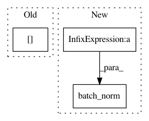

2348493e231cefa9230ea785562005cea43508cb,basenji/rnn.py,RNN,build,#RNN#Any#,15
Before Change
// convolution params
stdev = 1./np.sqrt(self.cnn_filters[li]*seq_depth)
kernel = tf.Variable(tf.random_uniform([1, self.cnn_filter_sizes[li], seq_depth, self.cnn_filters[li]], minval=-stdev, maxval=stdev), name="kernel")
biases = tf.Variable(tf.zeros([self.cnn_filters[li]]), name="bias")
// convolution
conv = tf.nn.conv2d(cinput, kernel, [1, 1, 1, 1], padding="SAME")
After Change
conv = tf.nn.conv2d(cinput, kernel, [1, 1, 1, 1], padding="SAME")
// batch normalization
conv = tf.batch_norm(conv, center=True, scale=True, activation_fn=tf.nn.relu, is_training=self.is_training, update_collections=None, name="bnconv%d"%li)
// nonlinearity
// cinput = tf.nn.relu(tf.nn.bias_add(conv, biases), name="conv%d"%li)
In pattern: SUPERPATTERN
Frequency: 3
Non-data size: 3
Instances
Project Name: calico/basenji
Commit Name: 2348493e231cefa9230ea785562005cea43508cb
Time: 2016-10-03
Author: drk@calicolabs.com
File Name: basenji/rnn.py
Class Name: RNN
Method Name: build
Project Name: HyperGAN/HyperGAN
Commit Name: 1aa6f71331656a09a2cc5a6f85a584ee362cedae
Time: 2016-11-26
Author: martyn@255bits.com
File Name: lib/discriminators/pyramid_discriminator.py
Class Name:
Method Name: discriminator
Project Name: HyperGAN/HyperGAN
Commit Name: 322f71f0f8c06a738c47cf825f8726ee5f1f496a
Time: 2016-11-11
Author: martyn@255bits.com
File Name: lib/discriminators/pyramid_nostride_discriminator.py
Class Name:
Method Name: discriminator